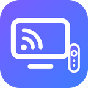
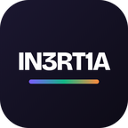
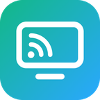
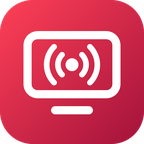

PC Cast Pro
Cast videos, manage your library and control your TVs.

IN3RT1A
Cast videos, manage your library and control your TVs.

Cast a link to one or more TVs.

Watch live TV.
Control your TVs.
Portable downloads, checksums and third-party source code are on the latest release.
Keep your computer awake and on the same network as your TVs. Pro and Lite require a computer.
./install.sh; add --service to start at boot. Administrator rights are not required.Builds are not code-signed. Windows SmartScreen may warn you; check the release checksums before installing.
Roku TVs are supported. Fire TV, Chromecast, AirPlay and DLNA support is in beta.
Live and Remote run without a PC. Android requires version 7 or later; Remote also requires a 64-bit device. Download the APK and allow installation from your browser when prompted.
For Live on iPhone, open the web app in Safari, then choose Share → Add to Home Screen.
Mobile Live has a smaller channel selection, search and favorites. It needs internet and does not include the desktop program guide or TV casting.
Android Remote needs the same Wi-Fi as your TV. TV compatibility needs real-device testing. An iPhone remote is not available.
Mobile beta notes and checksumsOptional donations start at $1.
Approved donor messages appear in the apps.